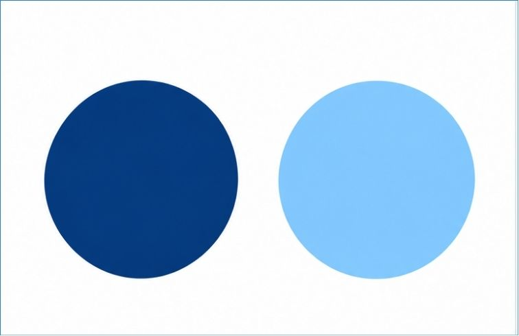
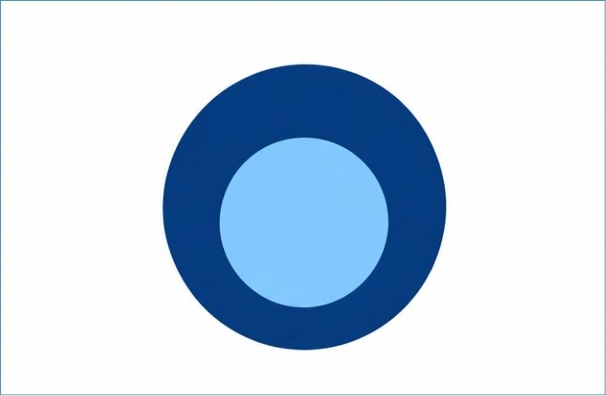
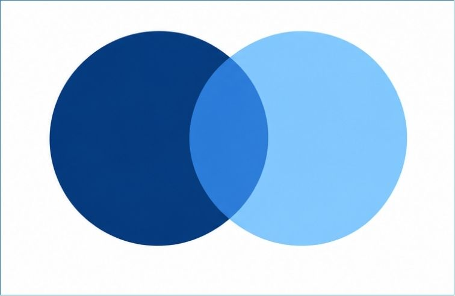
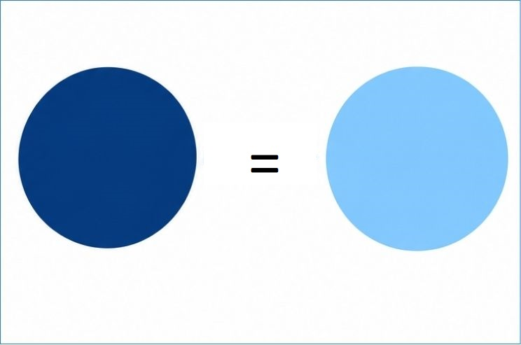

Основні положення Закону України "Про всеукраїнський референдум"
Блок 1. Поняття референдуму
Завдання 1. Заповніть пропуски
Референдум – це форма
демократії і спосіб здійснення влади
шляхом .
Завдання 2. Чи правильне твердження?
Референдум = вибори
Завдання 3. Визначте характеристики
Референдум
Характеристика
Вибори
Завдання 4. Оберіть візуальну схему
Оберіть схему, яка найкраще відображає співвідношення референдуму та виборів:

Два окремі кола

Вкладені кола

Перетин кіл

Кола з "="
Блок 2. Поняття і предмет всеукраїнського референдуму
Завдання 1. Заповніть пропуски
Поняття всеукраїнського референдуму закріплено в статті Закону України «Про Всеукраїнський референдум» від 26 січня року.
Завдання 2. Дайте визначення Всеукраїнського референдуму
Спробуйте дати визначення самостійно, а потім натисніть на картку, щоб перевірити себе.
ВСЕУКРАЇНСЬКИЙ РЕФЕРЕНДУМ
Всеукраїнський референдум є формою безпосередньої демократії в Україні, способом здійснення влади безпосередньо Українським народом, що полягає у прийнятті (затвердженні) громадянами України рішень шляхом голосування у випадках і порядку, встановлених Конституцією України та Законом «Про Всеукраїнський референдум».
Завдання 3. Предмет референдуму
Визначте, які питання можуть і не можуть бути предметом референдуму. Натисніть [?] для перегляду підказки.
Уявіть, що ці питання пропонують винести на референдум:
Можуть бути
Не можуть
Завдання 4. Заповніть пропуски
Скільки питань можна виносити на Всеукраїнський референдум?
Це передбачено в статті Закону.
Блок 3. Основні принципи проведення референдуму
Завдання 1. Визначте принципи
Визначте за описом, про який принцип йде мова, та зазначте відповідну статтю Закону. Натисніть [?] для перегляду підказки.
Блок 4. Призначення Всеукраїнського референдуму
Завдання 1. Встановіть відповідність
Предмет референдуму
Суб’єкт призначення
Нормативно-правовий акт
Завдання 2. Заповніть пропуски
Всеукраїнський референдум проголошується за народною ініціативою на вимогу не менш як
мільйонів громадян України, які мають право голосу, за умови, що підписи щодо призначення всеукраїнського референдуму зібрано не менш як у
областей і не менш як по
тисяч підписів у кожній області. Це передбачено в статті Закону України.
Блок 5. Процес проведення референдуму за народною ініціативою
Завдання 1. Визначте послідовність етапів
Розташуйте етапи проведення референдуму у правильній послідовності (зверху вниз).
Етапи (Перетягніть на лінію часу)
Завдання 2. Визначте строки
Блок 6. Етапи всеукраїнського референдуму
Ознайомтеся з кожним етапом, прочитайте зазначені статті та виконайте тести.